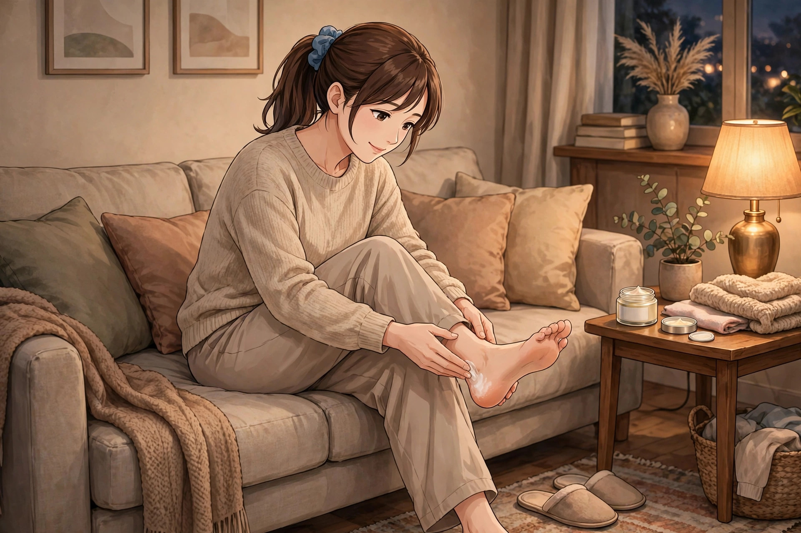
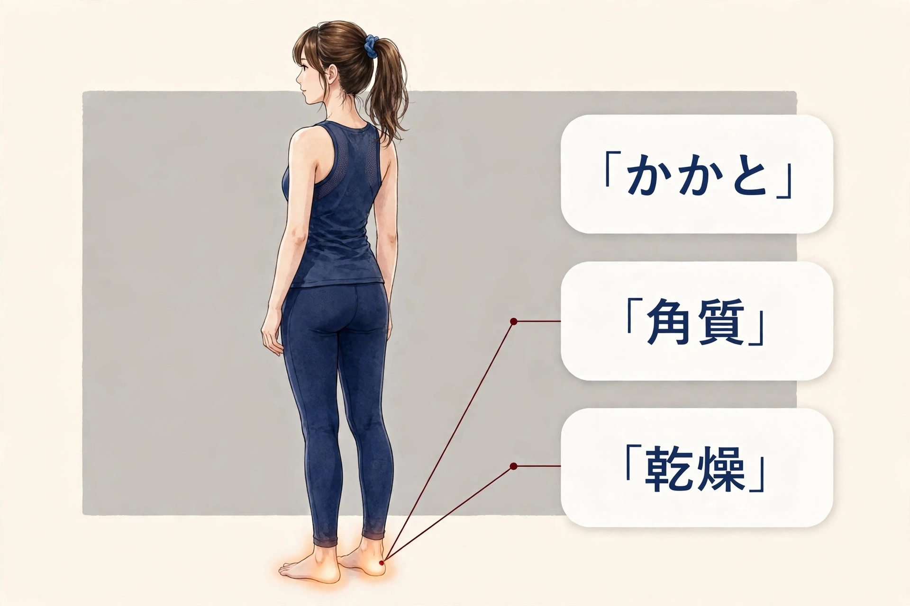

かかとのガサガサ
美容整体ステラ・ポラリス東三国｜大阪市淀川区東三国・東三国駅徒歩5分・女性向け

ガサガサのかかとをいたわって、なめらかな足元へ
ストッキングが引っかかる、素足になるのが恥ずかしい——かかとのガサガサは、女性の足元のお悩みの中でも気になりやすいものです。かかとは体重を支える場所で、皮膚が厚くなりやすく、乾燥が重なると硬さやザラつきが目立ってきます。靴との摩擦や、足の使い方、巡りの滞りも背景にあると言われています。このページでは、かかとのガサガサの背景にある仕組みと、かかとをいたわってなめらかな足元を目指す当サロンでのケア、ご自宅でできるセルフケアをご案内します。かかとは普段は隠れている場所ですが、素足の季節になると急に気になり始める方も多い部位です。あわせて、皮膚科への受診をおすすめする目安もご紹介します。まずは下のチェックで、ご自身の状態を確かめてみてください。
ご予約はこちら（Coubic）こんなお悩みありませんか
- かかとを触ると、硬くザラザラしている
- ストッキングや靴下が、かかとに引っかかる
- 冬になると、かかとのガサガサがとくに気になる
- 素足でサンダルを履くのが、ためらわれる
- クリームを塗っても、数日で元に戻る気がする
- かかとの皮膚が白く粉をふいたように見える
- 足先が冷えやすく、かかとの乾燥も強い気がする
当てはまる項目が多いほど、乾燥と摩擦、足の使い方のクセが重なっている目安とされています。かかとは「削る」よりも「いたわってうるおす」積み重ねが大切です。次のセルフチェックで、かかとの状態の傾向を確かめてみましょう。
簡単セルフチェック（かかとの状態チェック）
入浴後などに、手のひらでかかとの触り心地を確かめる簡単な方法です。
- 手のひらでかかと全体を包むように触り、硬さやザラつきの範囲を確認します。
- 左右のかかとを比べて、硬さや白っぽさに差がないかを見ます。
- ひび割れが深い、白い粉が広範囲に広がる、かゆみを伴う場合は、セルフケアの見直しに加えて、受診の目安もあわせて確認してみてください。
※これは診断ではありません。ご自身の状態の傾向を知る目安としてお使いください。
かかとのガサガサの原因と仕組み
かかとは体重を支える「厚くなる場所」
かかとは、歩くたびに体重を受け止める場所です。皮膚は負担から身を守るために厚く硬くなりやすい性質があり、とくに、かかとに体重がかかる歩き方が続くと、角質が積み重なってガサガサしやすくなります。図1のように、かかとの硬さは、足の使い方と乾燥が重なって現れることがあります。立ち仕事や歩く時間の長い方は、かかとへの負担が積み重なりやすいと言われています。

図1 かかとに影響する乾燥・摩擦・体重のかかり方と、いたわるケアで目指す状態のイメージ。歩き方のクセも、硬さの出方に関わります。肌の状態には個人差があります。
乾燥と角質の積み重なり
かかとには皮脂を出す腺がほとんどなく、もともと乾燥しやすい場所です。肌は一定の周期で生まれ変わりますが、乾燥が続くと古い角質がはがれずに残り、厚く重なっていきます。冬の乾燥した空気や、暖房の効いた室内も、かかとのうるおいを奪う一因になります。年齢とともに肌の水分を保つ力はゆるやかに変わっていくため、以前より乾燥を感じやすくなる方もいます。
靴と歩き方の摩擦
サイズの合わない靴や、かかとが浮くサンダルは、歩くたびに摩擦と衝撃をかかとに与えます。素足で硬い床を歩く習慣も、かかとへの負担になります。足裏全体で体重を受け止める歩き方ができると、かかと一点への負担は分散されやすくなります。姿勢の崩れで重心が後ろに寄ると、かかと側への負担はさらに増えやすいと言われています。
巡りの滞りと冷え
足先は心臓から遠く、巡りが滞りやすい場所です。冷えで巡りが滞ると、肌の生まれ変わりのリズムも乱れやすく、乾燥やガサガサが長引きやすいと言われています。ふくらはぎや足裏をゆるめて巡りを助けることは、かかとのケアの土台になります。デスクワークで足を動かす機会が少ない方ほど、夕方には足全体の巡りが滞りやすい傾向があります。
セルフケアで足りる場合・サロンケアが向く場合
ガサガサが軽く、入浴後の保湿を続けると触り心地がやわらぐ日が多い場合は、まずご自宅でのセルフケアを続けて様子を見る方法があります。一方で、硬さが厚く自分では整えにくい、足の冷えやふくらはぎの張りも一緒に整えたい、素足になる機会に向けて丁寧にいたわりたいという場合は、サロンでのケアが向いている目安になります。サロンでは、足裏からふくらはぎまでをオイルでゆるめ、かかとをいたわるケアを組み合わせて、施術後に「足元が軽い」「かかとがなめらかに感じる」と感じやすい状態を目指します。なお、受診の目安に当てはまる場合は、サロンより先に皮膚科へご相談ください。
当サロンでのケア
当サロンのかかとケアは、「かかとをいたわり、なめらかな足元を目指す」組み立てです。まずかかとの状態と足の使い方を一緒に確認し、足裏全体からふくらはぎまでつながりを見ながら、部位と目的に合わせて3つの手技を組み合わせます。
美容整体：足の着き方と姿勢のラインを整え、かかと一点に体重が集中しにくい体の使い方の土台をつくることを目的に。足裏全体で立つ感覚を取り戻すお手伝いをします。
アロマオイルマッサージ：足裏からかかと、ふくらはぎをオイルでゆるめ、うるおいを与えながら巡りが流れやすい状態を目指します。冷えやすい足元に、ていねいにアプローチします。
もみほぐし：足裏の土踏まずやふくらはぎなど、張りやすいポイントをほぐし、足元全体が軽く感じる状態を目指して進めます。
ケアを通して目指すのは、こんな変化です。
- かかとの触り心地がなめらかに感じられる状態へ
- 足裏全体で体重を受け止める、歩き方の土台づくりへ
- 足先の巡りが流れやすく、冷えが気になりにくい状態へ
- ふくらはぎまでゆるんで、足元が軽く感じる状態へ
- 自宅での保湿と角質ケアの続け方を知るきっかけへ
施術の仕上げには、かかとの保湿のコツや、角質を整えるときの力加減もお伝えします。かかとは日々のいたわりで触り心地が変わりやすい場所です。靴の選び方など、日常で負担を減らす工夫もあわせてご案内します。強さは途中でも調整できますので、遠慮なくお声がけください。

施術の流れ
ご来店後、気になる部位やお悩み、ご希望の強さなどをうかがいます。完全個室のため、周りを気にせずお話しいただけます。
かかとの状態や足の着き方、ふくらはぎの張り具合などを一緒に確認し、その日の状態に合わせた施術の進め方をご案内します。冷えなど足元の様子もお知らせください。
美容整体を中心に、ご希望に応じてアロマオイルマッサージ、もみほぐしを組み合わせて進めます。強さは途中でも調整できます。
施術後の状態を確認し、ご自宅で続けやすいセルフケアのポイントをお伝えします。次回の目安についても、ご希望があればご案内します。
料金
| コース | 通常価格 | キャンペーン価格（12/25まで） |
|---|---|---|
| 80分 | 8,000円 | 3,000円 |
| 100分 | 10,000円 | 4,000円 |
| 120分 | 12,000円 | 5,000円 |
クリスマスキャンペーンは12月25日まで、ご新規様もリピーターの方も対象です。施術内容は当日の状態とご希望に合わせて組み立てます。
ご自宅でできるセルフケア
- 入浴後の保湿：お風呂上がりの角質がやわらかいうちに、クリームやオイルをかかとにたっぷり塗り、靴下を履いてうるおいを閉じ込めます。毎日の積み重ねが目安です。
- 角質ケアはやさしく：専用のやすりや軽石は、入浴後のやわらかい状態で、同じ方向に軽くなでる程度に。削りすぎは逆に角質を厚くする一因になるため、週1回までを目安にします。
- 足を温める習慣：足湯や湯船で足元を温めると、巡りが助けられて保湿剤もなじみやすくなります。就寝前の短時間でも続けやすい習慣です。
- 靴の見直し：かかとがしっかり収まる靴を選び、長時間のサンダル歩きは控えめに。クッション性のあるインソールも、かかとへの衝撃をやわらげます。
ご自宅でのケアに：セルフケア資料ライブラリ（無料）
このお悩みに合わせたセルフケアの考え方を、無料の資料ライブラリでご紹介しています。
セルフケア資料ライブラリを開く →
受診の目安
次のような場合は、サロンでのケアの前に皮膚科への受診をおすすめします。ひび割れが深く、出血や痛みを伴う／白い粉やかゆみが足全体に広がっている／水ぶくれやジュクジュクした部分がある／保湿を続けても数週間まったく変わらない。かかとのガサガサに似た症状の中には、皮膚科で原因の確認が大切なものもあります。気になる症状があるときは、まず皮膚科でご相談ください。
よくある質問
Q. 初めてでも大丈夫ですか？
はい。当サロンは完全予約制・完全個室で、1日3組までのご案内です。最初にカウンセリングでかかとの状態や足のお悩みをうかがい、無理のない内容から始めます。施術の前後で「かかとがなめらかに感じる」「足元が軽い」といった感覚の違いを一緒に確認しながら進めますので、初めての方も安心してご利用いただけます。
Q. 角質を削ってもらえますか？
当サロンでは、角質を削る施術は行っていません。オイルでゆるめながらいたわるケアと、自宅でできる保湿・角質ケアの続け方のご案内が中心です。かかとの状態によっては、オイルケアの進め方を調整しながら対応します。ひび割れが深い場合などは、皮膚科への相談をおすすめしています。
Q. コースはどう選べばいいですか？
80分・100分・120分のコースがあり、ケアしたい部位の広さやお時間のご都合に合わせて選べます。足元に加えて脚全体や腰まわりまでゆっくり整えたい方には、100分が選ばれることが多いコースです。迷われる場合は、ご予約の際にお気軽にご相談ください。
Q. 場所と予約方法を教えてください。
大阪市淀川区東三国、東三国駅から徒歩5分です。完全予約制のため、予約サイト（Coubic）またはLINE公式アカウントからご予約をお願いしています。
Q. 男性も受けられますか？
当サロンは女性向けのため、男性の方は、同じ東三国の男性専用整体院「北辰堂」をご案内しています。
施術者について
平賀建人（施術歴30年）
鍼灸師・登録販売者・アロマセラピスト・パーソナルトレーナーの資格を持ち、美容整体を中心に、アロマオイルマッサージ、もみほぐしを、その日の状態とご希望に合わせて組み合わせて施術します。このページの内容は、施術者の知識と経験をもとに作成しています。

料金・ご予約
ご新規様もリピーターの方も 12/25まで
80分 3,000円／100分 4,000円／120分 5,000円
通常価格は80分8,000円／100分10,000円／120分12,000円です。施術内容はご希望に合わせて組み立てます。
営業時間：月〜土 17:00〜23:00／日 10:00〜23:00（完全予約制）｜電話：080-2468-3086
大阪府大阪市淀川区東三国2丁目25番4号101（東三国駅徒歩5分）
専門解説で詳しく見る
仕組みから詳しく知りたい方は、専門解説シリーズのこちらの記事もあわせてご覧ください。